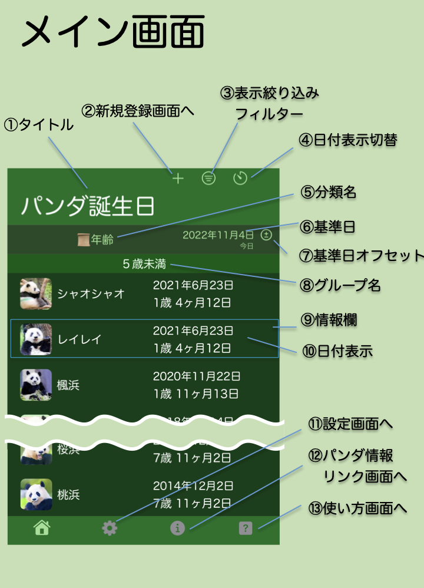

- メイン画面とは
- 起動直後に表示される、アプリの基本画面です。パンダ情報を一覧表示します。
- アイコンの説明
- （新規データ追加）
- タップすると新規登録画面に移動します。ユーザーが誕生日やイベントを登録できます。
- 表示絞り込みフィルター
- フィルターを選んでメイン画面に表示する項目を絞り込んで表示できます。
- デフォルト...現在いるパンダとユーザー登録データ
- ユーザーデータ...ユーザー登録データ
- お気に入り...お気に入り登録したデータ
- 今いるパンダ...今日本にいるパンダ
- 過去も含むパンダ...過去日本にいたパンダを含むパンダ
- 全てのデータ...過去日本にいたパンダを含むパンダとユーザー登録データ
- ④日付表示切替
- 情報欄の日付表示を年表示、年月日表示、日数表示に切り換えます。現在表示中の分類によって切り替わる日数表示が変わります。分類ごとに設定を覚えます。
- ⑤分類名
- 現在表示している分類の種類を示します。タップすると分類選択メニューから表示分類を選べます。
- 場所...場所で分類表示します
- 年齢...年齢順に表示し、年代で分類します
- 人間年齢...人間年齢に換算した年齢順に表示し、年代で分類します
- 誕生月...年間の誕生月日順に表示し、月で分類します
- 来日日...来日日順に表示し、年代で分類します
- 帰国日...帰国日順に表示し、年代で分類します。すでに帰国したパンダ以外の情報は更新されることがあります
- 死亡日...フィルターで過去も含むパンダか全てのデータを選んだ時に、亡くなったパンダを死亡日順に表示し、年代で分類します
- 在日期間...パンダが日本にいる期間の順に表示し、年代で分類します
- 性別...性別で分類します
- 種別...種別で分類します
- お気に入り...お気に入りに入っているかどうかで分類します
- ⑥基準日
- 年齢計算の基準日を表示します。日付の下には基準日が何を表示しているかラベルを表示します。初期値は今日です。
タップすると基準日入力（後述）が表示されます。その入力に応じて各情報欄の年齢などを再計算して表示します。例えば任意の日にどのパンダが何歳だったとか、生まれる何年前だったかとかがわかります。
- ⑦基準日オフセットボタン
- タップすると基準日オフセット入力（後述）が表示されます。その入力に応じて基準日にオフセット（差分）を設定できます。
- ⑧グループ名
- 現在の分類に応じた情報欄のグループ名です。グループ名の後にそのグループに所属する複数の情報欄がまとまって表示されます。
- ⑨情報欄
- パンダ情報もしくは利用者が登録した情報の抜粋表示です。アイコン、名前、日付を表示します。iPadなどの画面が広い機種では場所も表示します。情報欄をタップすると詳細情報画面に移動します。
- ⑩日付表示
- 情報毎の日付を表示します。分類が来日日、帰国日、死亡日ならばそれぞれとそれまでの日数を示し、誕生月なら誕生月日と次の誕生日までの日にち、人間換算年代なら誕生日と人間年齢に換算した年齢、それ以外なら誕生日と経過日数を示します。日付表示切り替えアイコンをタップする度に表示方法が変わり、分類毎に表示方法を覚えます。
- ⑪設定画面へ
- タップすると設定画面に移動します。
- ⑫パンダ情報リンク画面へ
- タップするとパンダ情報へのリンク画面に移動します。
- ⑬使い方画面へ
- タップすると現在表示していた画面に合わせた使い方を表示します。
基準日入力

- 基準日入力
- 基準日をタップすると画面の下に表示され、基準日を自由に入力できます。
- 任意の基準日を設定すると、誕生日からの経過日数などが今日が基準日かのように自動計算して表示されます。
- 画面の説明
- ①キャンセルボタン
- タップすると基準日入力を中断します。
- ②今日ボタン
- タップすると基準日を今日に戻します。
- ③完了ボタン
- タップすると入力した日付で基準日を設定します。
- ④日付選択
- 年、月、日をそれぞれ上下にフリックして日付を入力します。
基準日オフセット入力

- 基準日オフセット入力
- 基準日オフセットボタンをタップすると画面の下に表示され、基準日のオフセット（差分）を入力できます。
- 例えば、今日もしくは任意の基準日から１０年後は ＋０１０年と設定し、６ヶ月前は ー００６ヶ月と設定します。
- 画面の説明
- ①キャンセルボタン
- タップするとオフセット入力を中断します。
- ②リセットボタン
- タップするとオフセットを０に戻します。
- ③完了ボタン
- タップすると入力したオフセットを基準日に加算します。
- ④＋ー選択
- オフセットの正負を選択します。
- ⑤数値選択
- オフセットの数値を選択します。
- ⑥単位選択
- オフセットの単位（年・月・週・日）を選択します。